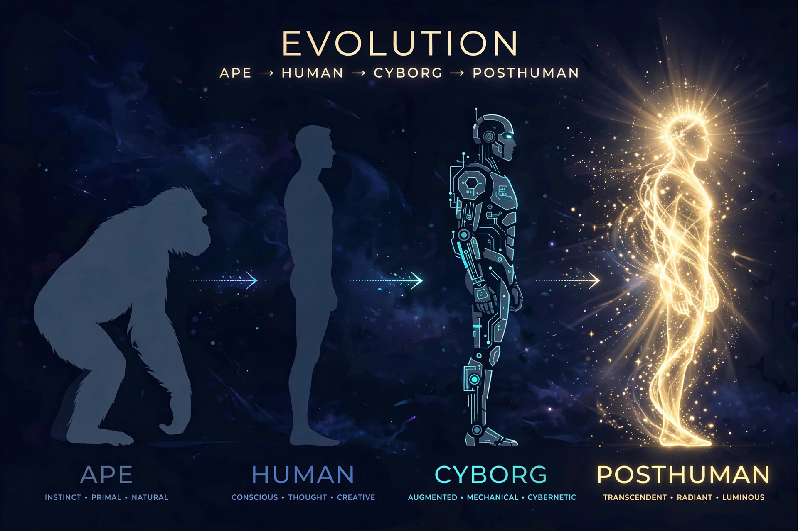

From Wikipedia, the free encyclopedia
| Transhumanism | |
|---|---|
| Type | Intellectual and cultural movement |
| Core idea | Humanity can and should transcend its biological limits through technology |
| Key concepts | Life extension, cognitive and physical enhancement, mind uploading, superintelligence, morphological freedom |
| Key figures | Julian Huxley (coined the term, 1957), FM-2030, Max More, Nick Bostrom |
| Organisations | Humanity+ (formerly World Transhumanist Association, 1998) |

Transhumanism is an intellectual and cultural movement that holds that human beings can and should use technology to overcome fundamental biological limits — ageing, disease, cognitive and physical constraints — and that humanity's current form is not the endpoint of its evolution. Its symbol is "H+", and its adherents, whose numbers are hard to estimate, range from life-extension researchers and cryonicists to philosophers of artificial intelligence. The word was given its modern sense by the biologist Julian Huxley in 1957: man "transcending himself... realising new possibilities of and for his human nature".
Central transhumanist goals include radical life extension (treating ageing as a problem to be solved), human enhancement (genetic, prosthetic, pharmacological and computational), mind uploading (transferring a mind to a computational substrate), and the guidance of advanced AI toward a flourishing "posthuman" future; the principle of morphological freedom — the right to modify or not modify one's own body — is a characteristic commitment. Thinkers such as FM-2030, Max More (whose "Principles of Extropy" gave the movement an early charter), Natasha Vita-More and Nick Bostrom developed its philosophy; Bostrom's work on existential risk and the simulation argument became influential far beyond the movement. The Transhumanist Declaration (1998, revised since) is its closest common statement.
Transhumanists look to converging technologies — sometimes abbreviated NBIC (nano-, bio-, info-, cogno-) — and to cryonics as a bridge to future medicine. Critics reply from several directions: bioconservatives (Leon Kass, Francis Fukuyama, who called transhumanism one of the world's most dangerous ideas) warn of lost human dignity and equality; disability scholars question the movement's framing of bodily difference as defect; others doubt the feasibility of uploading or radical life extension, or argue that enhancement markets would entrench inequality between enhanced and unenhanced. Internal debates divide libertarian from social-democratic ("technoprogressive") transhumanists, and religious critics and sympathisers dispute whether transcendence of the body fulfils or betrays human nature.
Transhumanism overlaps with extropianism, singularitarianism (Ray Kurzweil's prediction of a technological singularity around 2045), cosmism (its Russian ancestor tradition, from Nikolai Fedorov onward), and the rationalist and effective altruism communities, with which it shares the concern for longtermism and existential risk.
Philosophy of technology · Longtermism · Effective altruism · Philosophy · Deep ecology